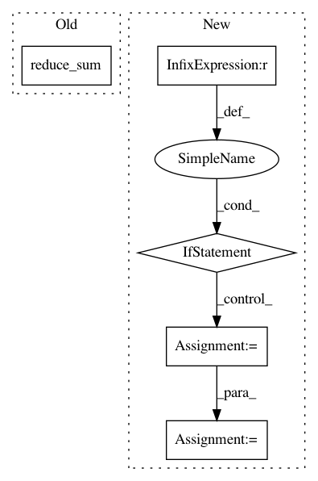

0ab6621dcd3e9cd97a257ea2d8d05b23bfba8609,openke/module/model/HolE.py,HolE,_calc,#HolE#,65
Before Change
def _calc(self, head, tail, rel):
relation_mention = tf.nn.l2_normalize(rel, 1)
entity_mention = self._ccorr(head, tail)
return -tf.sigmoid(tf.reduce_sum(relation_mention * entity_mention, 1, keep_dims = True))
After Change
return self._real(res).flatten(start_dim = -2)
def _calc(self, h, t, r, mode):
if mode != "normal":
h = h.view(-1, r.shape[0], h.shape[-1])
t = t.view(-1, r.shape[0], t.shape[-1])
r = r.view(-1, r.shape[0], r.shape[-1])
score = self._ccorr(h, t) * r
score = torch.sum(score, -1).flatten()
return score
def forward(self, data):
In pattern: SUPERPATTERN
Frequency: 3
Non-data size: 5
Instances
Project Name: thunlp/OpenKE
Commit Name: 0ab6621dcd3e9cd97a257ea2d8d05b23bfba8609
Time: 2020-04-08
Author: thu.hanxu13@gmail.com
File Name: openke/module/model/HolE.py
Class Name: HolE
Method Name: _calc
Project Name: calico/basenji
Commit Name: ea60242913a0ce53f4e033fee3be1f55e2ceb7b0
Time: 2021-02-14
Author: drk@calicolabs.com
File Name: basenji/metrics.py
Class Name: R2
Method Name: update_state
Project Name: calico/basenji
Commit Name: ea60242913a0ce53f4e033fee3be1f55e2ceb7b0
Time: 2021-02-14
Author: drk@calicolabs.com
File Name: basenji/metrics.py
Class Name: PearsonR
Method Name: update_state